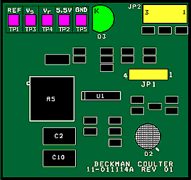
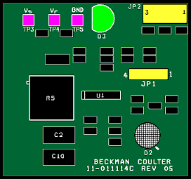
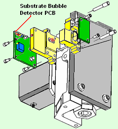

PCB - Substrate Bubble Detector Sensor
This document provides these details for the Substrate Bubble Detector Sensor PCB:
- Drawings.
- Details: Test Points, LEDs, Connector Overview, Connector Pin-outs.
- Schematics.
- Location.
Drawings


Details
The Substrate Bubble Detector sensor PCB monitors fluid and air in the substrate probe tubing.
Test Points - PCB - Substrate Bubble Detector Sensor
LEDs - PCB - Substrate Bubble Detector Sensor
Conn. Overview - PCB - Substrate Bubble Detector Sensor
Schematics
Page 1
- Connectors: JP1, JP2.
- Test Points: TP3, TP4, TP5.
- 011114-1.pdf
Location
